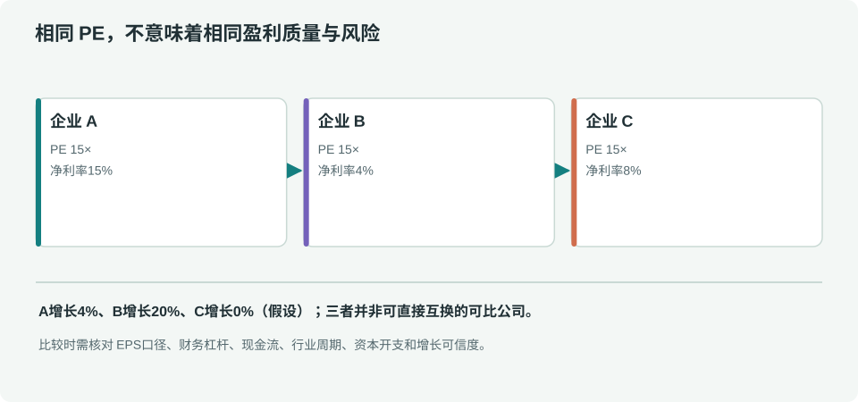
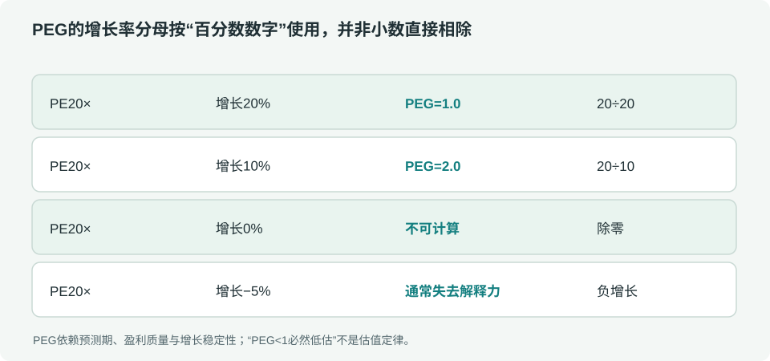
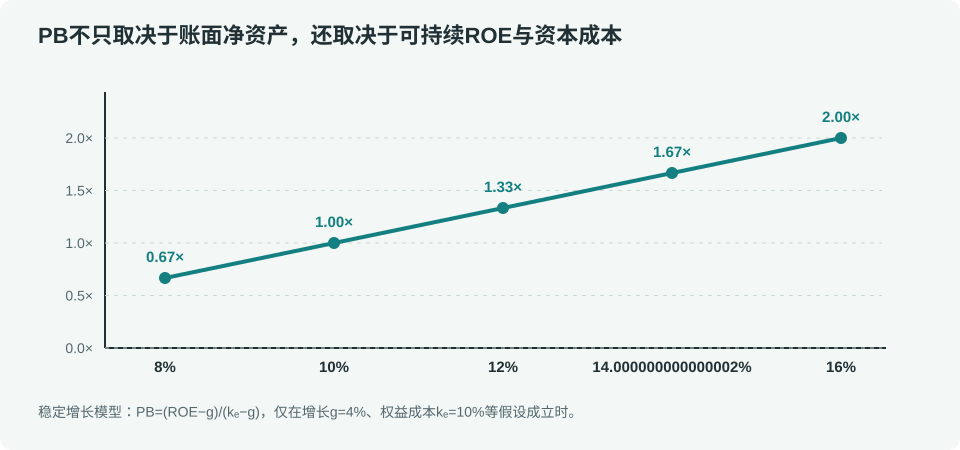

CHAPTER 09 · FINANCIAL VALUATION
相对估值上：PE、PEG与PB背后的经济含义
相同倍数不等于相同价值。将盈利时期、成长预测、净资产收益率和股权资本成本统一到可比较口径。
同是15倍PE，为什么不能直接断定一样便宜？
假设三家公司PE均为15倍：A利润率高而增长温和，B增长很快但现金流持续为负，C增长停滞却有稳定分红。倍数相同并不意味着盈利质量、风险或未来回报相同。相对估值不是找一个“平均倍数”，而是解释倍数为什么不同。

PE先匹配每股价格和每股收益的时期
市盈率PE＝每股价格／每股收益EPS，或同口径股权市值／净利润。TTM（滚动过去十二个月）与Forward（未来十二个月预测）分母不同，不能将两者直接比较。预测PE含有预测风险，负EPS时数学上虽可得到负数，但通常不具备通常意义的“回收倍数”解释。
价格30元、EPS 2元，PE=15倍。若利润只是出售资产带来的一次性收益，或预测未来盈利下滑，则15倍并不能表示“15年回本”。增长率、资本投入、风险及分红政策都决定这一倍数的经济意义。
PEG：增长率单位、预测期和负增长陷阱
PEG试图把PE与预期EPS增长率结合，惯例往往用增长率的百分数数字作为分母：PE20倍、预期增长20%时PEG=20／20=1；若增长10%，PEG=2。不能直接用20／0.20得出100作为同一定义下的PEG。

| 情景 | 指标结果 | 边界 |
|---|---|---|
| PE20、增长20% | PEG1.0 | 增长期与利润预测必须可靠 |
| PE20、增长10% | PEG2.0 | 并不能单凭2.0判断高估 |
| 增长为0或负值 | 常规PEG不可解释 | 负增长阶段改用其他估值逻辑 |
PEG忽略增长所需的投资、增长可持续的年数以及风险和现金流的质量。所谓“PEG小于1必买”不是估值定理。
PB：账面权益与可持续ROE、股权成本
市净率PB=股权市值／归属于对应股东的账面权益，或每股股价／每股账面价值。PB低可能意味着市场预计ROE低于股权资本成本，或资产账面价值不可靠；PB高也可能来自轻资产模式或持续高ROE。

在简化的稳定增长、固定ROE且再投资率与增长一致的模型中，PB=(ROE−g)/(Ke−g)。当ROE=14%、g=4%、Ke=10%时PB≈1.67倍。这个数值建立在盈利与资本回报长期可持续的假设上，不能当作行业固定标准。
研究倍数要先找出风险与盈利口径差异
选择可比公司时，优先控制商业模式、资产强度、资本结构、地区税制、增长、盈利稳定性和会计政策。对周期行业，峰值利润常使PE看起来最低，但未来正常化盈利可能更弱；对亏损企业，PE不适用不等于企业一定没有价值。
| 倍数 | 优先使用场景 | 最重要的疑点 |
|---|---|---|
| TTM PE | 持续正盈利企业 | 周期高点、一次性损益、摊薄 |
| Forward PE | 未来盈利可做合理预测 | 预测偏差和分析师一致性 |
| PB | 账面资本与经营回报关系紧密 | 减值、无形资产、金融行业口径 |
| PEG | 正增长且增长预测具有可比性 | 增长率单位、时间和质量 |
一次完整的交叉验证
某假设公司每股价格30元、TTM EPS2元、每股账面权益20元、未来预期EPS增长率15%。PE=15倍、PB=1.5倍、按惯例PEG=1.0；三个数不能直接说明投资价值，需要问盈利是否由经营现金支持、长期ROE能否覆盖股权成本以及增长需要多少新增资本。
若两家公司名义PE同为15倍但一家公司资产质量恶化，就应降低对其未来利润和资产回收能力的假设。相对倍数只是审查DCF与财务预期的另一条视角，不能消除模型假设。
避免将低倍数当作安全边际
常见错误是：拿银行PB与互联网公司PB直接比较；用亏损公司的负PE做行业排名；使用一致预期增长却忽视它的修订频率；对利润周期性极强的公司只用当期TTM盈利；忽略股权稀释、非经常性损益和少数股权。
检验
- PE低为什么可能对应企业处于利润周期顶点？
- PE20、预计增速10%时按惯例PEG是多少？为什么这不足以判断低估？
- 如何解释PB=0.8倍但ROE持续低于股权资本成本的企业？
原始资料与公式口径
下列资料用于核验估值方法。估值取决于主观假设，模型输出不能替代证券价格、尽调或风险管理。